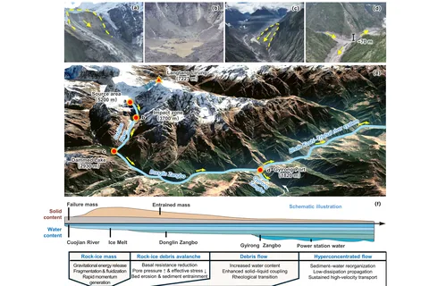
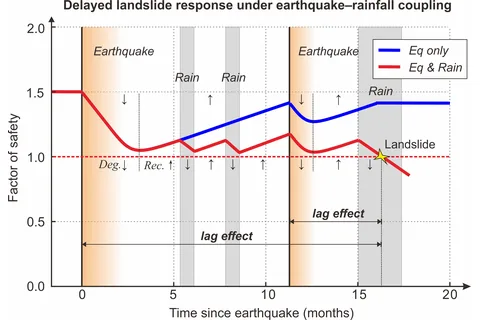
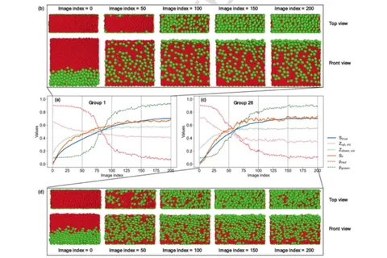

郭剑 ｜中国科学院地理科学与资源研究所 · 自然灾害研究中心 ｜助理研究员
郭剑，男，1993年生，陕西白水人，中国科学院地理科学与资源研究所自然灾害研究中心助理研究员，长期从事山地灾害动力学与灾害链演化机理研究。入选第十届中国科协青年人才托举工程和国际科学理事会与联合国减灾署IRDR青年科学家计划，主持国家自然科学基金青年科学基金项目（C类）、国家资助博士后研究人员计划（B类）和中国博士后科学基金面上等科研项目。围绕沟谷灾害链的演进与转化过程，系统梳理其动力学模式，阐明灾害运动—颗粒分选—剪切液化耦合减阻机制，揭示孔喉地形结构对灾害动能的主动消散效应，并自主研发灾害动力学数值模拟软件，为灾害链风险分析与工程防灾决策提供技术支撑。
相关成果发表于国内外专业期刊学术论文 44 篇，其中包括热点论文1篇、高被引论文4篇；已获授权发明专利5项、实用新型专利3项，登记软件著作权7项。研究成果入选陕西省优秀博士学位论文，《Landslides》最佳论文，《工程科学与技术》高影响力论文，以及CNKI中国知网高影响力、高被引与高下载论文。多次参与国内重大滑坡与泥石流灾害应急调查，服务于国家重大工程（如CZ铁路、YX水电）减灾评估与风险防控工作。
依托崔鹏院士团队开展山地灾害动力学与监测预警研究，旨在构建基于灾害形成演化物理机制的减灾应用产品（易发性分析、灾害动力学软件、监测预警产品），欢迎地理学、地质工程、计算机、数学与物理背景的本科生/硕士/博士/博士后加入。
🎤 学术报告
- 2026.9.20 2026年全国工程地质学术年会，FlowSim交互式灾害动力模拟软件及其在吉隆巨灾的应急风险研判应用，中国，长春。
- 2026.8.27 国务院发展研究院，第二次青藏高原科学考察地质灾害风险与防御主要成果汇报，中国，北京。
- 2026.8.17 国家电网，FlowSim交互式灾害动力模拟软件及监测预警应用，中国，北京。
- 2025.11.23 2025年全国工程地质学术年会，地形对远程滑坡动力学的控制作用：启动、放大与调控机制，中国，长沙。
- 2025.4.11 第二届全国环境地学大会，高速远程滑坡-碎屑流运动机制研究，中国，武汉。
📚 论文发表

Unpacking the catastrophic cascade of the 2026 Gyirong disaster
Science Bulletin · 2026 · 在线发表，卷期页码待定 [原文]
研究亮点：融合灾前后影像、视频、现场调查与地震信号，重建吉隆岩冰崩跨境灾害链全过程。揭示撞击解体、冰体消融、侵蚀裹挟和河水掺入共同驱动的级联转化、规模放大与减阻机制，解释灾害体七分钟奔袭二十二千米的超强运动性，强调风险评估应拓展至全流域，并加强跨境监测预警与防控协同。

Journal of Earth Science · 2026 · 网络首发，卷期页码待定 [原文]
研究亮点：以积石山地震九个月后的民和滑坡为例，结合现场调查、遥感与水文稳定性耦合模拟，重建失稳、运动及堵江过程。揭示震后落水洞与农田道路汇流共同增强优先流、加速滑面形成的机制，建立入渗响应与滑坡运动及堰塞体规模的定量联系，阐明裂隙愈合和降雨侵蚀竞争对震后滞后失稳的控制作用。

SegVis: A vision-based method for real-time estimation of the degree of granular segregation
Powder Technology · 2026 · 484, 122978 [原文]
研究亮点：提出视觉驱动的颗粒分选度自动估计框架，融合正视和俯视图像的质心与面积比例特征，利用离散元数据和随机森林建立视觉指标与真实分选度的映射。通过多种颗粒参数及循环、水槽型数值场景检验适用性，识别流动头尾薄层对预测的影响，并提供开源实现，支持非接触、可复现的动态分选分析。
- Li, J., Shen, W.*, Huang, D.*, Xia, X., Guo, J., Liu, D., Chen, J., Li, T., Peng, J. 2026. An improved depth-averaged landslide dam breach model with modified sediment transport and bank collapse algorithms. Computers and Geotechnics 193, 107963. [原文]
- Ni, X., Zhou, Y., Guo, J., Zhang, Z. 2026. Study on Morphological Characteristics of Moraine Soil and Influence on Crushing Behavior. J. Test. Eval. 54(4), e20250159. [原文]
- 王烁帆, 崔一飞*, 邓雄涛, 李尧, 张勇刚, 伍纯昊, 郭剑. 2026. 基于地震观测记录的地质灾害事件检测——以“23.7”北京山洪泥石流为例. 地球与行星物理论评（中英文） 57(1), 70-81. [原文]
- Guo, J., Li, Y.*, Hao, J., Zhang, Z. 2025. An integrated simulation-learning framework for rapid prediction of regional snow avalanche runout and hazard metrics. Engineering Geology 357, 108373. [原文]
- Li, Y., Cui, Y.*, Guo, J., Wang, S. 2025. Climate-driven hydrogeological hazards: A growing threat to Asia’s Water Tower [version 2]. Hydrosphere 9380009-V2. [原文]
- 崔鹏, 郑粉莉, 张国涛, 周公旦，郭剑. 2025. 国家野外科学观测研究站观测技术规范第四卷： 地球物理地表动力灾害——水力型灾害, 北京，科学出版社 [原文]
- Guo, J., Cui, Y.* 2025. Amplification of Landslide Hazards Due to Terrain Modification in Jintian Village During the Ms 6.2 Jishishan Earthquake. In: Progress in Landslide Research and Technology, Volume 4 Issue 1, pp. 83-93. [原文]
- Guo, J., Cui, Y.*, Yin, Y., Wang, G. 2025. Influence of throat topography on the kinematics of rock avalanches. J. Rock Mech. Geotech. Eng. 17, 7250-7264. [原文]
- Guo, J., Wang, G.*, Li, Y. 2025. Enhancing system kinetics through size segregation in granular materials. Powder Technol. 454, 120706. [原文]
- Guo, J., Wang, Y.*, Li, Y. 2025. Topographic controls on the initiation and transport of landslide-triggered debris flows. Geomorphology 486, 109901. [原文]
- He, Y.*, Qin, Y., Zhang, Z., Ni, X., Wang, H., Haroon, A.M.M., Guo, J., Zhang, K., Zhang, F. 2025. Insights into the Microstructural Evolution of a Sand-Bentonite Mixture with Low Bentonite Fraction due to Dehydration. Int. J. Geomech. 25, 04025203. [原文]
- Li, Y., Wang, Z.*, Qiu, C., Wei, R., Guo, J., Wu, Z., Bazai, N.A., Ye, C. 2025. Evolution of deep-seated bedrock landslides in a deep canyon. Geomorphology 489, 109983. [原文]
- Li, Z., Guo, J.*, Li, T., Li, P., Ma, X., Zhang, M., Jia, E., Xu, P. 2025. Influence of topography on the fragmentation and mobility of landslides. Bull Eng Geol Environ 84, 73. [原文]
- Wang, G., Nie, J., Cui, Y.*, Guo, J.. 2025. Incorporating particle roughness and hardness into contact model to reproduce elastic behaviors of granular soils in DEM. Comput. Geotech. 179, 107054. [原文]
- Zhang, J., Li, Yong, Cui, Y.*, Wu, Z., Xue, Y., Cheng, J., Jiang, H., Li, Yao, Guo, J., Nie, J., Wang, G., Luo, A. 2025. Unity of terrestrial and extraterrestrial soils in granular configuration. Earth Planet. Sci. Lett. 654, 119239. [原文]
- Li, Y., Cui, Y.*, Hu, X., Lu, Z., Guo, J., Wang, Y., Wang, H., Wang, S., Zhou, X. 2024. Glacier Retreat in Eastern Himalaya Drives Catastrophic Glacier Hazard Chain. Geophys. Res. Lett. 51, e2024GL108202. [原文]
- Li, Y., Cui, Y.-F.*, Hao, J.-S., Zhang, Z.-T., Wang, H., Guo, J., Wang, S.-F. 2024. Frequency and size change of ice-snow avalanches in the central Himalaya: A case from the Annapurna II glacier. Adv. Clim. Change Res. 15, 464-475. [原文]
- Yao, S., Kan, G.*, Liu, C., Tang, J., Cheng, D., Guo, J., Jiang, H. 2023. A Hybrid Theory-Driven and Data-Driven Modeling Method for Solving the Shallow Water Equations. Water 15, 3140. [原文]
- Cui, P., He, M., Tapponnier, P., Zhang, L., Li, Z., Gong, W., Zhou, G.G.D., Guo, J. 2023. Preface for “Geohazards and mitigation along the Sichuan-Tibet Railway”. Eng. Geol. 317, 107095（专刊前言）. [原文]
- 秦明月, 郭剑, 邹强*. 2023. 植被覆被条件下不稳定斜坡分布规律探究——以大渡河流域为例. 工程地质学报 31, 628-637. [原文]
- 郭剑, 崔一飞*. 2023. 滑坡-泥石流转化研究进展. gcdzxb 31, 762-779. [原文]
- Cui, P.*, Ge, Y., Li, S., Li, Z., Xu, X., Zhou, G.G.D., Chen, H., Wang, H., Lei, Y., Zhou, L., Yi, S., Wu, C., Guo, J., Wang, Q., Lan, H., Ding, M., Ren, J., Zeng, L., Jiang, Y., Wang, Y. 2022. Scientific challenges in disaster risk reduction for the Sichuan-Tibet Railway. Eng. Geol. 309, 106837. [原文]
- Guo, J., Cui, P.*, Qin, M., Wang, J., Li, Y., Wang, C. 2022. Response of ancient landslide stability to a debris flow: a multi-hazard chain in China. Bull Eng Geol Environ 81, 273. [原文]
- Guo, J., Cui, Y.*, Xu, W.*, Shen, W., Li, T., Yi, S. 2022. A novel friction weakening-based dynamic model for landslide runout assessment along the Sichuan-Tibet Railway. Eng. Geol. 306, 106721. [原文]
- Guo, J., Cui, Y.*, Xu, W., Yin, Y., Li, Y., Jin, W. 2022. Numerical investigation of the landslide-debris flow transformation process considering topographic and entrainment effects: a case study. Landslides 19, 773-788. [原文]
- Qin, M., Cui, P.*, Jiang, Y., Guo, J., Zhang, G., Ramzan, M. 2022. Occurrence of shallow landslides triggered by increased hydraulic conductivity due to tree roots. Landslides 19, 2593-2604. [原文]
- Yan, Y., Cui, Y.*, Huang, X., Zhou, J., Zhang, W., Yin, S., Guo, J., Hu, S. 2022. Combining seismic signal dynamic inversion and numerical modeling improves landslide process reconstruction. Earth Surf. Dyn. 10, 1233-1252. [原文]
- Yao, S., Bazai, N.A., Tang, J., Jiang, H., Yi, S., Zou, Q., Ahmed, T., Guo, J. 2022. Dynamic process of a typical slope debris flow: a case study of the wujia gully, Zengda, Sichuan Province, China. Nat. Hazards 112, 565-586. [原文]
- 郭剑. 2022. 滑坡-泥石流灾害链形成及转化机制研究 (博士). 长安大学. [原文]
- Guo, J., Wang, J.*, Li, Y., Yi, S. 2021. Discussions on the transformation conditions of Wangcang landslide-induced debris flow. Landslides 18, 1833-1843. [原文]
- Li, Y., Cui, P.*, Ye, C., Junior, J.M., Zhang, Z., Guo, J., Li, J. 2021. Accurate Prediction of Earthquake-Induced Landslides Based on Deep Learning Considering Landslide Source Area. Remote Sensing 13, 3436. [原文]
- 崔鹏*, 郭剑. 2021. 沟谷灾害链演化模式与风险防控对策. 工程科学与技术 53, 5-18. [原文]
- Guo, J., Yi, S., Yin, Y., Cui, Y.*, Qin, M., Li, T., Wang, C. 2020. The effect of topography on landslide kinematics: a case study of the Jichang town landslide in Guizhou, China. Landslides 17, 959-973. [原文]
- Liu, D., Cui, Y.*, Guo, J., Yu, Z., Chan, D., Lei, M. 2020. Investigating the effects of clay/sand content on depositional mechanisms of submarine debris flows through physical and numerical modeling. Landslides 17, 1863-1880. [原文]
- Yan, Y., Cui, Y.*, Guo, J., Hu, S., Wang, Z., Yin, S. 2020. Landslide reconstruction using seismic signal characteristics and numerical simulations: Case study of the 2017 “6.24” Xinmo landslide. Eng. Geol. 270, 105582. [原文]
- Yan, Y., Cui, Y.*, Tian, X., Hu, S., Guo, J., Wang, Z., Yin, S., Liao, L. 2020. Seismic signal recognition and interpretation of the 2019 “7.23” Shuicheng landslide by seismogram stations. Landslides 17, 1191-1206. [原文]
- Zhu, X., Peng, J.*, Liu, B., Jiang, C., Guo, J.. 2020. Influence of textural properties on the failure mode and process of landslide dams. Eng. Geol. 271, 105613. [原文]
- 刘邦晓, 朱兴华*, 郭剑, 姜程. 2020. 不同沟床坡度堰塞坝溃口下切过程试验研究. 长江科学院院报 37, 59-66. [原文]
- 刘邦晓, 朱兴华*, 郭剑, 姜程, 马会安, 裴迎慧. 2020. 不同沟床坡度堰塞坝溃口展宽历程试验研究. 工程地质学报 28, 1272-1280. [原文]
- 朱兴华, 刘邦晓*, 郭剑, 姜程. 2020. 堰塞坝溃坝研究综述. 科学技术与工程 20, 8440-8451. [原文]
- Shen, W., Li, T.*, Li, P., Berti, M., Shen, Y., Guo, J.. 2019. A two-layer numerical model for simulating the frontal plowing phenomenon of flow-like landslides. Eng. Geol. 259, 105168. [原文]
- Shen, W., Li, T.*, Li, P., Shen, Y., Lei, Y., Guo, J.. 2019. The influence of the bed entrainment-induced rheology and topography changes on the propagation of flow-like landslides: a numerical investigation. Bull Eng Geol Environ 78, 4771-4785. [原文]
- 沈月强, 沈伟, 李同录*, 郭剑, 雷雨露. 2019. 基底侵蚀对高速流动性滑坡运动性影响的模拟分析. 工程地质学报 27, 1405-1414. [原文]
- 郭剑, 沈伟, 李同录*, 沈月强, 雷雨露. 2019. 一种流动性滑坡涌浪动力学模型. 水科学进展 30, 273-281. [原文]
- Shen, W., Li, T.*, Li, P., Guo, J.. 2018. A modified finite difference model for the modeling of flowslides. Landslides 15, 1577-1593. [原文]
- 梁潇丹, 李同录*, 江睿君, 郭剑, 王宇, 薛博文. 2018. 用于旱地牧区灌溉的一种风力提水滴灌系统. 工程地质学报 26, 149-154. [原文]
- 郭剑, 李同录*, 李萍, 蔺晓燕, 沈伟, 翟张辉. 2018. 一种考虑曲面地形效应的流动性滑坡运动模型. 工程地质学报 26, 319-324. [原文]
- 郭剑. 2018. 一种双层结构的高速远程滑坡运动学模型及应用 (硕士). 长安大学. [原文]
- 郭剑, 李同录*, 江睿君, 李萍. 2017. 矿山采洞位置对边坡稳定性的影响分析, in: 2017年全国工程地质学术年会论文集, pp. 333-339. [原文]
📄 专利与软件著作权
授权发明专利
- 2026.08.25，基于坝体级联溃决的溃决洪水数值模拟方法及装置。发明人：刘定竺、崔一飞、郭剑。专利号：ZL202311787714.7。
- 2026.08.04，交互式滑坡动力致灾快速模拟方法。发明人：郭剑、崔一飞。专利号：ZL202610112365.6。
- 2026.07.17，一种冰碛土滑坡侵蚀试验模拟装置及方法。发明人：崔一飞、郭剑、王姣、周新植、张国涛、李尧、殷延洲、王烁帆、王国栋。专利号：ZL202310728354.7。
- 2022.07.05，滑坡过程分析方法、过程数值重构方法、应用。发明人：崔一飞、严炎、熊广林、尹述遥、郭剑、李丽、田鑫、田继枫、朱兴华。专利号：ZL202011453490.2。
- 2022.03.15，一种地震扰动区流域多时段水文效应评估方法。发明人：张国涛、崔鹏、王昊、郭剑、王姣。专利号：ZL202111537215.3。
软件著作权
- 2026.06.24，地质灾害信息可视化与管理系统 V1.0。登记号：2026SR0681159。
- 2026.02.10，流动性滑坡致灾过程模拟软件（简称：FlowSim-LS）V1.0。登记号：2026SR0266548。
- 2026.02.10，滑坡、泥石流灾害事件自动监测统计分析系统 V1.0。登记号：2026SR0266459。
- 2025.01.21，基于泥石流底部作用力的监测系统 V1.0。登记号：2025SR0137931。
- 2019.05.20，滑坡涌浪模拟软件（简称：LWF）V1.0。登记号：2019SR0488406。
- 2018.06.28，流动性滑坡模拟软件（简称：LS-TS）V1.0。登记号：2018SR478670。
- 2017.06.14，二维滑坡致灾过程模拟软件 V1.0。登记号：2017SR264815。
🏅 荣誉与获奖
- 2025.03 中国科协，第十届青年人才托举工程(No. YESS20240684)。
- 2024.12 陕西省教育厅，2024年陕西省优秀博士学位论文。
- 2023.12 国际灾害风险综合研究计划 “IRDR Young Scientists” 计划。
🎓 学术经历
- 2025.01 - now, 自然地理，助理研究员，中国科学院地理科学与与资源研究所，自然灾害研究中心。
- 2022.07 - 2025.01, 土木工程，博士后，清华大学水利系，合作导师：崔一飞 副教授 。
- 2018.09 - 2022.06, 岩土工程，联合培养博士，中国科学院山地灾害与环境研究所，导师：崔 鹏 院士。
- 2018.09 - 2022.06, 地质资源与地质工程，工学博士，长安大学，导师：崔 鹏 院士。
- 2016.09 - 2018.06, 地质工程（工程地质），工学硕士，长安大学，导师：李同录 教授。
- 2012.09 - 2016.06, 地质工程，工学学士，长安大学，导师：李同录 教授。